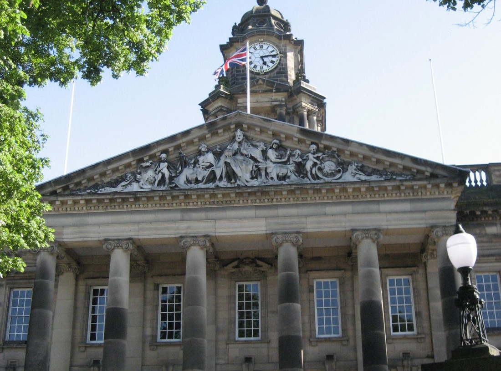
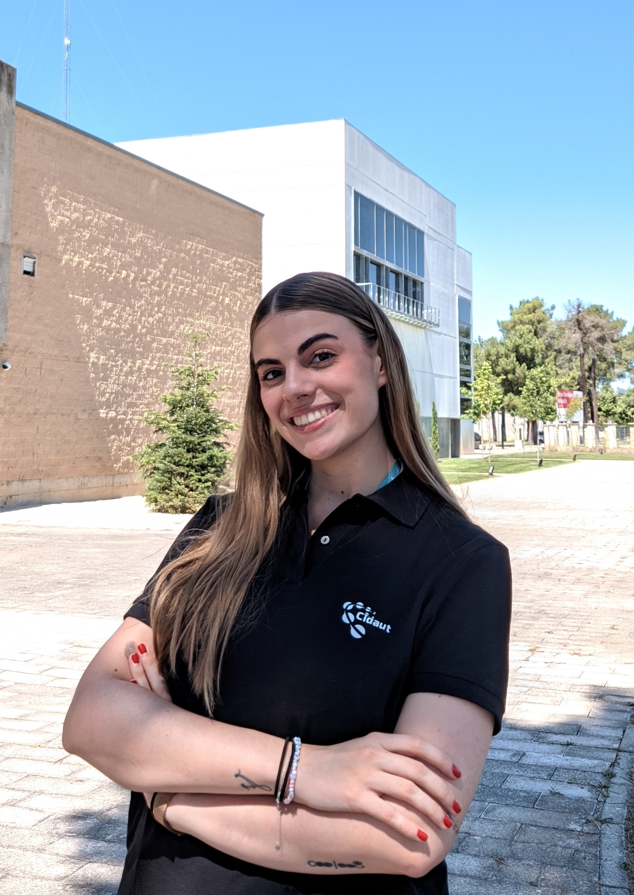
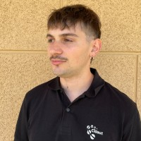
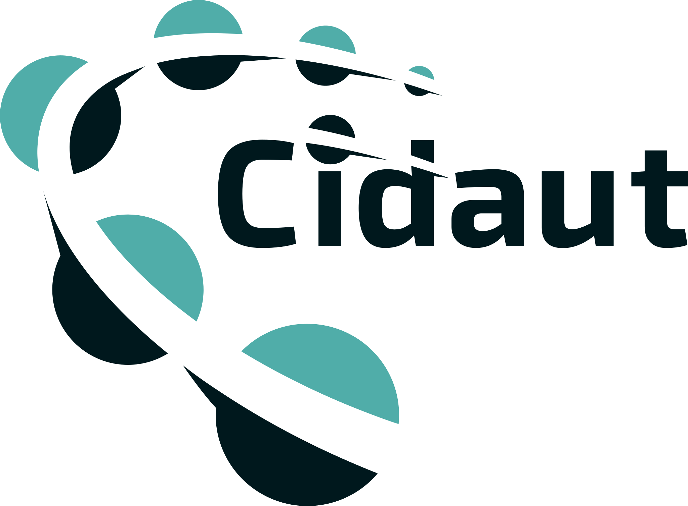
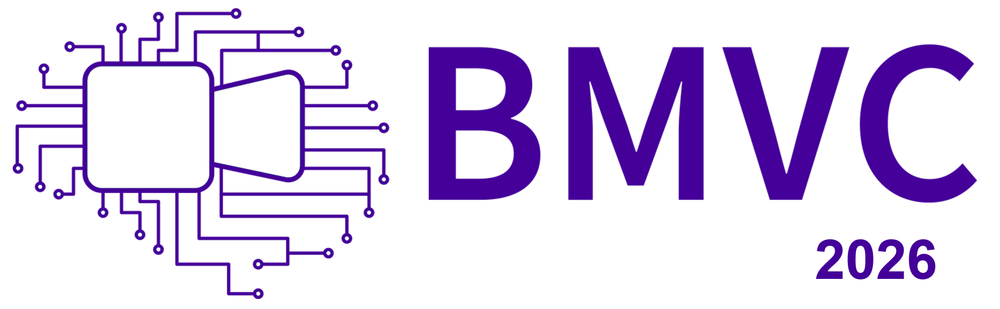

Introduction
Welcome to the 2nd Workshop on Smart Cameras for Physical AI at BMVC 2026! After a successful first edition at BMVC 2025 with 100+ in-person attendees, we return with a sharper focus: cameras as the foundation of reliable robot perception.
Robots, drones, and autonomous systems live or die by the quality of their visual input. A weak ISP, a noisy RAW frame, a damaged lens, or an uncontrolled enhancement model can break recognition, mapping, planning, and action. This workshop brings together computational photography, low-level vision, robotics, and edge AI to discuss how to design camera pipelines that are robust, controllable, and useful for downstream intelligence — including VLMs and VLAs.

Previous edition: BMVC 2025 — Smart Cameras for Smarter Autonomous Vehicles and Robots.
Speakers
Tentative Schedule
Full-day workshop outline. Times are tentative and will be confirmed closer to BMVC 2026.
| 09:00 – 09:15 | Welcome & opening |
| 09:15 – 09:45 | Paper spotlights |
| 09:45 – 10:30 | Marcos V. Conde — Cameras for Robots |
| 10:30 – 11:00 | Coffee break |
| 11:00 – 11:45 | Ziteng Cui (University of Tokyo) |
| 11:45 – 12:30 | Andrew Wang (Blur Labs) |
| 12:30 – 13:30 | Lunch break |
| 13:30 – 14:15 | Hirokatsu Kataoka (AIST / Oxford VGG) |
| 14:15 – 15:00 | Tom Bishop (Glass Imaging) |
| 15:00 – 15:40 | Coffee / posters & demos |
| 15:40 – 16:15 | Open discussion, challenges & closing |
Organizers

Paula Garrido
CIDAUT AI

Daniel Feijoo
CIDAUT AI
Contact marcos.conde@uni-wuerzburg.de
Sponsors & Supporters

